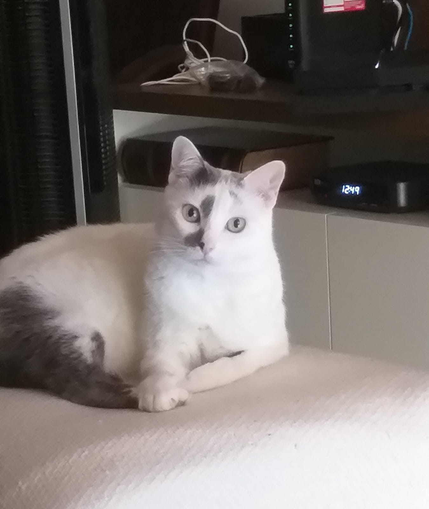
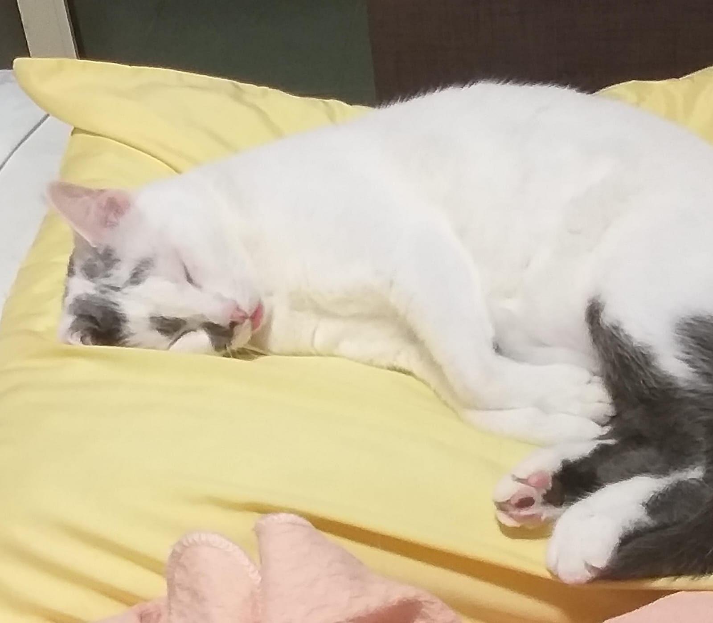
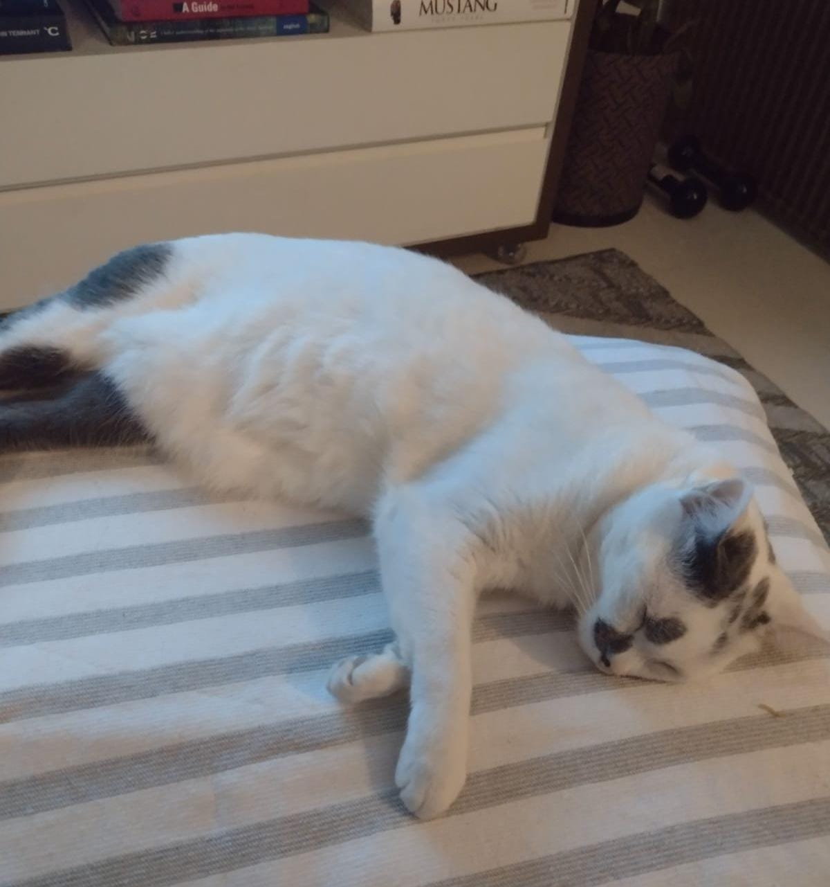

Frigg



Esta é Frigg!!!
Frigg foi adotada em 2015, segue abaixo uma foto dela na feirinha de adoção:
O nome "Frigg" vem da mitologia nórdica.
Frigg, ou Frigga, é esposa de Odin e é uma deusa associada ao amor e ao casamento.
Caso você tenha interesse em saber mais, entre neste link!